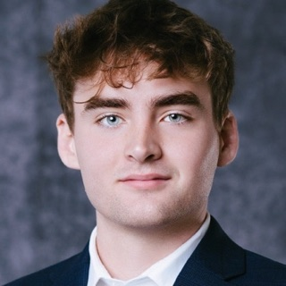
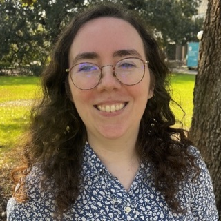
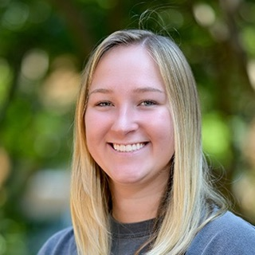
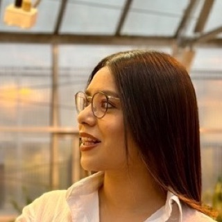
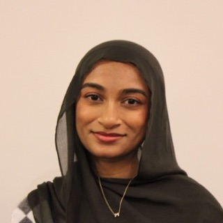
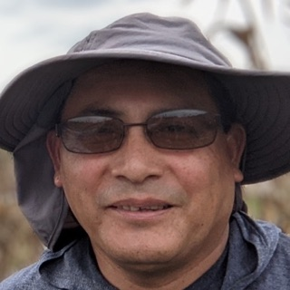
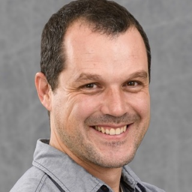
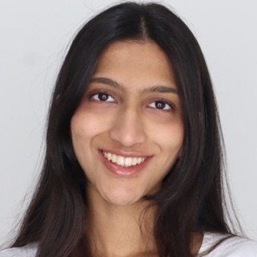

Brock Davis
Undergraduate Researcher, Genetics major
Brock joined the lab in 2025.
Fausto Rodríguez Zapata
Postdoc
Fausto studies maize glycerolipid quantitative and population genetics and genetic associations with soil variables involved in phosphorus deficiency.
Hannah Pil
PhD Candidate, Genetics Program
Hannah joined the lab in summer 2021 as an undergraduate and since then she has become a master corn pollinator.

Jill Love
Postdoc
Jill joined the lab in 2026. She works on the ARPA-E NSave Maize project with Joe Gage and Alex Woodley.

Lauren Insko
PhD Student, Structural and Molecular Biochemistry Program
Lauren joined the lab in January 2025. She is working on identifying regulatory elements of the gene High PhosphatidylCholine 1 as well as identifying structural elements of the phospholipase protein product.

Lina López-Corona
Project Manager, ARPA-E NSave Maize project
Lina joined the lab in fall 2023.

Maheera Hassan
Undergraduate Researcher, Genetics major
Maheera joined the lab in 2026.
Nirwan Tandukar
Postdoc
Nirwan joined the lab in January 2022 as a PhD student, completed his PhD in July 2026 and is now a postdoc in the lab. He develops approaches that use multiple genetic datasets to identify genes involved in adaptation to abiotic stresses, and built the Sorghum Lipid Database.

Pascual Blanco
Field Technician
Pascual joined the lab in fall 2021. He manages all our field operations.

Rubén Rellán-Álvarez
Principal Investigator
Rubén is an Associate Professor in the Department of Molecular and Structural Biochemistry at NC State.
Sam Strimple
Undergraduate Researcher, Genetics major
Sam joined the lab in 2026.

Sanaa Jain
Undergraduate Researcher, Biochemistry major
Sanaa joined the lab in 2026 through the SAPLINGs program.